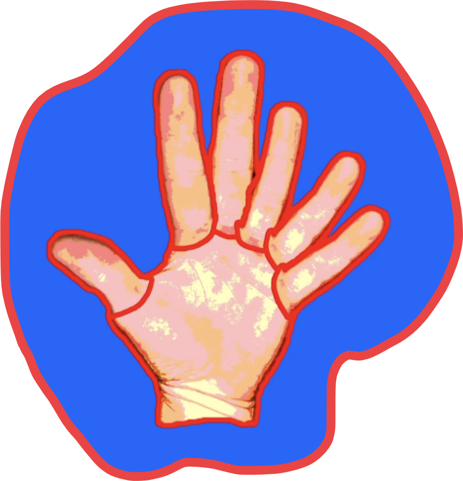
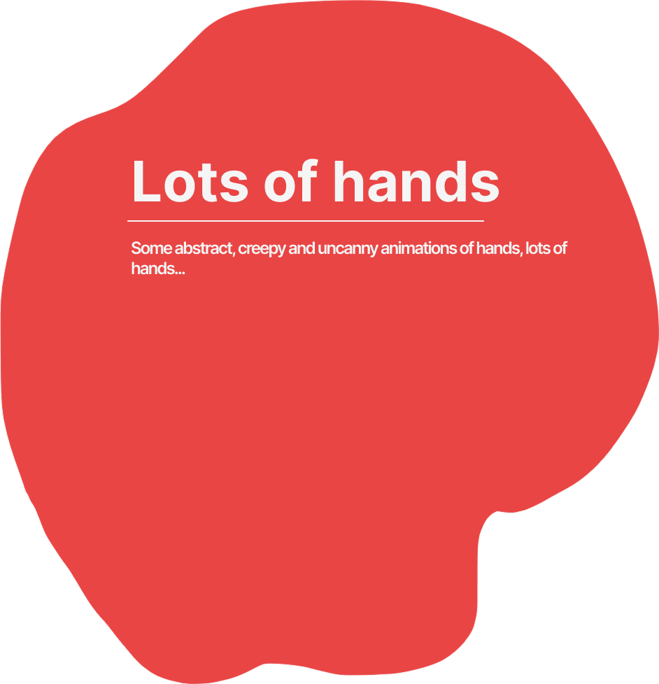
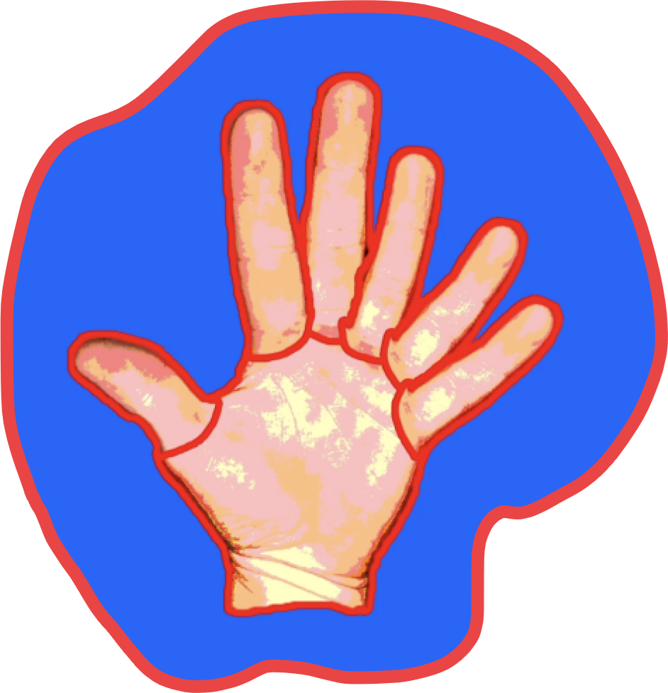
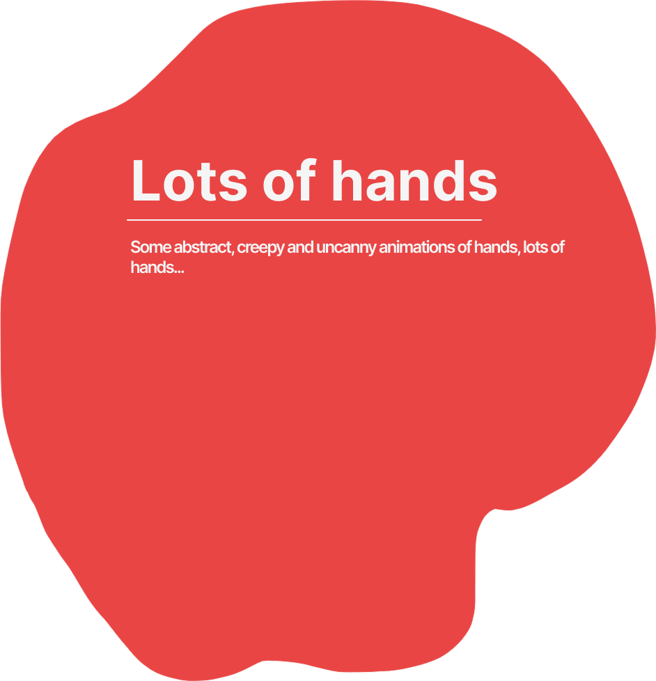
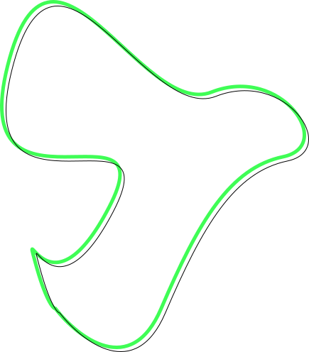

In short, I am a
philosopher, politician,
f16 pilot, aggressive romantic,
cardiothoracic surgeon, part-time
atheist,
adventurer, impressionist gorenoise artist,
method actor, golf ball diver, snake charmer,
retired badminton coach, fishing trawler, 3× common
cold survivor, absurdist, stoic even though haven’t read Meditations
by Marcus Aurelius yet, but I am a big fan of his podcasts,
enjoyer of long walks in industrial areas where the
light isn’t working, visual poet, periodacial headache haver, singer
of lullabies for the people of the working class, youtube
watcher, active amateur full-time gamer, someone who isn’t really
fond of Italian literature, but can see the bright side even though I don’t
understand Italian.
